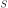
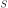

Next: About this document ... Up: ch4 Previous: MOSFET Amplifier
The Logic family is composed of different types of digital logic circuits:
Both the p-channel MOSFET (pMOS) and n-channel MOSFET (nMOS) can be
treated as a switch between its drain  and source  controlled by
the voltage between gate
and source  controlled by
the voltage between gate  and source . When
(e.g.,
) for nMOS and
(e.g.,
)
for pMOS, the circuit is a short-circuit because of the low resistance between
and ; otherwise, the circuit is an open-circuit due to the large
resistance between and . A circuit composed of both types of MOSFET
transistors is called a complementary MOS or CMOS circuit, which
is widely used in digital systems.
and source . When
(e.g.,
) for nMOS and
(e.g.,
)
for pMOS, the circuit is a short-circuit because of the low resistance between
and ; otherwise, the circuit is an open-circuit due to the large
resistance between and . A circuit composed of both types of MOSFET
transistors is called a complementary MOS or CMOS circuit, which
is widely used in digital systems.
Due to such logic properties of the series and parallel connections of the MOS transistors, various logic circuits can be constructed to realize any arbitrary logic function by two complementary networks of MOS transistors:
 so that the circuit will conduct.
so that the circuit will conduct.
These two pull-up and pull-down networks will turn on and off alternatively,
depending on the input variables of the logic function, so that the output
voltage is high for logic 1 if  , but low for logic 0 if .
, but low for logic 0 if .
The specific circuits of the pull-up and pull-down networks are based on De Morgan's Law which states: the negation (complement) of a logic function can be found by negating the logical operations (turn AND to R and OR to AND) as well as the variables in a function. For example, given a logic function , we can find its negation by De Morgan's law:
| (179) |
Here are the CMOS implementations of some simple logic functions:
The NOT gate is implemented by a pull-up circuit composed of only a pMOS transistor and its complementary pull-down circuit composed of only a nMOS transistor:
The pull-down function is , the pull-up function is , The output function is the same as the pull-up function, a negation of AND, or NAND.
The pull-down function is , the pull-up function is , The output is the same as the pull-up function , negation of OR, or NOR.
 |
(180) |
More complicated logic functions can be similarly implemented using CMOS circuits.
The MOS circuit below implements the logic function shown above, where the pull-up network implementing while the pull-down network implementing :